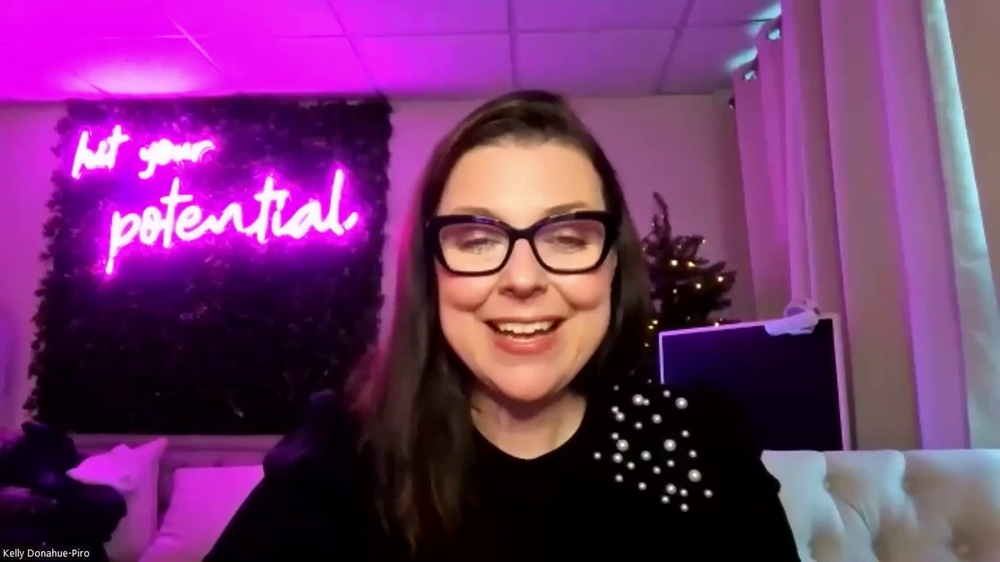

Key Moments

Summary & Script
How to Reduce Client Churn Insurance: Tips for Renewing Policies Effectively
Source: https://www.youtube.com/watch?v=3TKSVb7VOcQ
Video ID: 3TKSVb7VOcQ
Overview
The video teaches insurance agency owners how to reduce client churn and boost revenue at policy renewal time. It stresses that most losses stem from silence, missed opportunities, and poor renewal strategy—not price. By moving from reactive to proactive renewal conversations, handling cancellations thoughtfully, and training reps to become retention specialists, agencies can keep clients longer and generate more cross‑selling opportunities.
Topics Covered
- Proactive renewal review calls – Reach out 45‑60 days before a policy expires, use the call to review coverage, discuss market conditions, and uncover gaps for cross‑selling, turning monoline clients into more profitable multi‑line relationships.
- Handling cancellations proactively – Treat every cancellation call as a dialog, not a conclusion; ask why the client wants to leave, explore price concerns, coverage confusion, or life‑change needs, and offer adjustments or flexible payment options. Even if they leave, a respectful process preserves referrals and future win‑backs.
- Training reps to be retention rock‑stars – Retention is a teachable skill. Use role‑plays, side‑by‑side listening, scripts, and structured objection handling to build confidence. Provide ongoing learning via on‑demand videos and live virtual training through the agency’s “Agency School.”
- Resources & support – The presenter highlights the agency’s website, performance partners, blog library, and over 1,000 YouTube videos as tools for agencies seeking deeper guidance.
Key Takeaways
- Renewals are relationship checkpoints; use them to reduce churn and increase multi‑line revenue.
- Contact clients 45‑60 days ahead of renewal to discuss coverage, not just price.
- Turn cancellation calls into conversations to uncover underlying reasons and possible solutions.
- Multi‑line clients stay longer; aim to expand coverage breadth during renewals.
- Retention skills can be trained through role‑plays, scripts, and mentorship.
- Leverage the agency’s training platform for continuous rep development and process improvement.
- A respectful cancellation experience protects referrals and opens doors for future re‑engagement.
Notable Quotes
- “Most agencies don’t lose clients because of the price, they lose them because of silence, missed opportunities, and a lack of strategy at renewal.”
- “Retention isn’t about reacting. It’s about leading the renewal conversation.”
- “If our reps believe that they can save accounts, they most certainly will.”
Podcast Script
JORDAN: Hey everyone, welcome back to the podcast, I’m Jordan, your detail‑driven host, and with me as always is the big‑picture guy, Mike.
MIKE: Thanks, Jordan! Today we’re diving into a hot topic for insurance agencies—how to turn client churn into revenue growth.
JORDAN: The transcript we got breaks it down into three strategies, starting with proactive renewal review calls about 45 days before a policy expires.
MIKE: That timing is key—catch the client before they even think about leaving, and you can shift the conversation from price to value.
JORDAN: Exactly. By reviewing coverage gaps and market conditions early, agents can position themselves as risk‑management partners rather than just salespeople.
MIKE: And that opens the door for multi‑line upsells, which studies show keep clients around longer than monoline accounts.
JORDAN: The second strategy is handling cancellations proactively—listening to why a client wants out before you process the termination.
MIKE: It’s like a safety net: if the issue is a misunderstanding or a life change, you can offer adjustments or payment options on the spot.
JORDAN: The transcript stresses that the tone of the call matters; it should feel like a conversation, not a conclusion.
MIKE: Right, because even if they still leave, a respectful exit can turn them into a referral source or a future comeback client.
JORDAN: Third, they suggest training reps to become “retention rockstars” through role‑playing and side‑by‑side listening.
MIKE: I love that—actual practice builds confidence, and confidence is what makes reps own the renewal conversation instead of fearing it.
JORDAN: They also mention scripts and structured frameworks, which can help newer agents avoid getting stuck on objections.
MIKE: And let’s not forget the agency school they offer—on‑demand videos and live virtual classrooms to keep the whole team on the same page.
JORDAN: So, pulling it together: proactive outreach, empathetic cancellation handling, and systematic training are the three pillars.
MIKE: When agencies adopt those pillars, they shift from reacting to churn to leading the renewal dialogue, which drives both retention and revenue.
JORDAN: For anyone listening, start by mapping out a 45‑day renewal calendar and script a quick gap‑analysis question set.
MIKE: Then, record a few cancellation calls, identify the tone, and coach your reps on turning those “goodbyes” into “let’s talk.”
JORDAN: Remember, retention isn’t luck—it’s a repeatable process you can teach and measure.
MIKE: And the payoff? Happier clients, fewer surprises at bill time, and a healthier bottom line for your agency.
JORDAN: That wraps up today’s deep dive. Thanks for tuning in, and don’t forget to check out the agency school if you want to fast‑track your team’s skills.
MIKE: Thanks, everyone! Keep leading those renewal conversations, and we’ll see you next time. Bye for now!